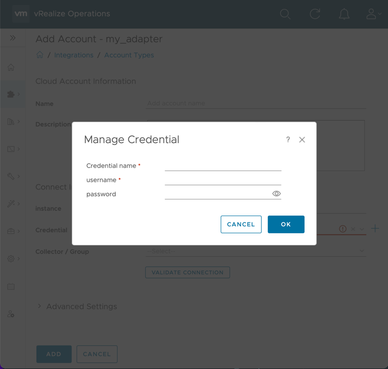
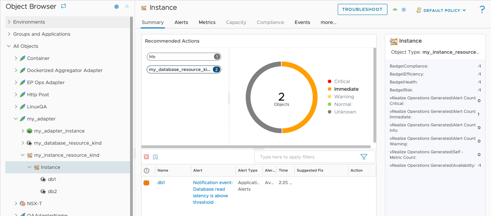

Adding to an Adapter¶
Object Model¶
What is the Object Model?¶
At runtime, Aria Operations Manager creates objects representing data sources in the adapter. Every adapter must include
an object model that provides object types, object properties, and semantic definitions describing resources and the
metric data's meaning. The object model can be defined by using a describe.xml file, which should be defined in the
conf directory,
or it can be defined using the Adapter Library
by returning an AdapterDefinition object from the Get Adapter Definition method.
references
describe.xml vs. AdapterDefinition¶
When running mp-build, mp-test collect, or mp-test test they call the Get Adapter Definition method
and then generate describe.xml file with the AdapterDefinition object.
If a describe.xml file is present in the conf directory, the Get Adapter Definition method is not called.
Defining an Adapter and Adapter Instance in the Object Model¶
To define an adapter in the conf/describe.xml file use the top-level AdapterKind XML element. Only one adapter can be
defined in the object model. The key will be used
when creating objects (See Creating an object), and must also be present in the manifest.txt
file in the "adapter_kinds" array. When defining an adapter, we also have to define an adapter instance type. An adapter
instance is a special object in VMware Aria Operations that stores user configuration for a connection. Every adapter
must have exactly one adapter instance type.
The Adapter instance type is set by defining a ResourceKind XML element with
attribute type=7.
When using an Adapter Library, we can use the AdapterDefinition object.
references
- Python AdapterDefinition object.
- Java AdapterDefinition object.
- describe.xml documentation.
Once an adapter instance is defined, any configuration fields (ResourceIdentifier element) and credentials (CredentialKind element)
will be prompted to the user when creating an account in VMware Aria Operations on the Data Sources → Integrations
page (See Adding a Configuration Field to an Adapter Instance
and Adding a Credential. After the account has been created, configuration fields will be
available in the input to the Collect, Test, and Get Endpoint methods.
(See Creating an Adapter Instance.)
Adding a Configuration Field to an Adapter Instance in the Object Model¶
Adapter instance identifiers distinguish between adapter instances from the same adapter. They also allow for user configuration.
In the describe.xml adapter instance identifiers can have an identType of 1 or 2. A type of 1 means the
identifier will be used for determining uniqueness, and will show up by default on the configuration page. If the type
is 2, the identifier is non-identifying, and will show up under the 'advanced' section of the configuration page.
The Parameterobject has an advanced property that determines identType.
references
- Python Parameter object.
- Java Parameter object.
- describe.xml documentation.
Creating an account from the above xml (plus a credential).
ssl_modeandmax_eventshave an identType of 2, so they are present in 'Advanced Settings'.Note: If there are any existing connections used by the
mp-testtool before resource identifiers were created or updated, these will need to be deleted or updated.

Once an adapter instance is defined, any configuration fields (ResourceIdentifier element) will be prompted to the user when
creating an account in VMware Aria Operations on the Data Sources → Integrations page.
After the account has been created, configuration fields will be available to the AdapterInstance object passed to the
Collect, Test, and Get Endpoints methods.
Defining a Credential in the Object Model¶
In order to connect to most targets, a credential is required. If necessary, an adapter can have multiple different credential kinds.
To add a credential to the Adapter using in the conf/describe.xml, add a CredentialKind element to AdapterKind/CredentialKinds.
The CredentialKind element takes one or more CredentialField elements which correspond to an individual piece
of data needed for a credential.
We can use the Define Credential Type method
to define a new credential type and add it to the AdapterDefinition object; then we can specify each credential
field using the returned CredentialType object.
references
- Python:
- CredentialType object.
- Define Credential Type method.
- Java:
- CredentialType object.
- Define Credential Type method.
- describe.xml documentation.
A typical credential that requires a username and password might look like this:
When defining a credential in conf/describe.xml file, it must be added to the Adapter Instance. The adapter
instance is a special ResourceKind that is used to configure an adapter. It is marked with the xml attribute/value
type="7". To add the credential to the adapter instance, add an attribute credentialKind to the adapter instance's
ResourceKind element, with a value of the CredentialKind's key attribute.

Adding a credential to an adapter instance with the
usernameandpasswordfields as defined above. 'Credential name' is always added (by VMware Aria Operations), and allows for credentials to be reused between adapter instances.
Both describe.xml and AdapterDefinition object allow for the use of multiple credential types.
Note
In the describe.xml credential kind keys are separated by a comma.
Once the credential is defined in the object model, it can be used in the adapter code.
Note
If there are any existing connections used by the mp-test tool before the credential was created
or updated, these will need to be deleted or updated.
Once an adapter instance is defined, any credential defined in the object model
will be prompted to the user when creating an account in VMware Aria Operations on the Data Sources → Integrations
page. After the account has been created, credential fields will be available AdapterInstance object passed to the
Collect, Test, and Get Endpoints methods.(See Creating an Adapter Instance.)
Credentials defined in the object model are available to the AdapterInstance object passed to
the Collect, Test, and Get Endpoints methods (See Creating an Adapter Instance.).
If an adapter supports multiple credential types, the Get Credential Type method can be used to determine the type of the
credential used by the adapter instance.
references
- Python Get Credential Type method.
- Java Get Credential Type method.
Creating an Adapter Instance¶
Using an Adapter Library,
the canonical method for creating an adapter instance is using the AdapterInstance object.
Configuration fields and credentials can be accessed using Get Identifier Value and Get Credential Value,
respectively.
references
- Python
- Get Identifier Value method.
- Get Credential Value method.
- Java
- Get Identifier Value(Inherited from Object) method.
- Get Credential Value method.
Note
the AdapterInstance From Input fuction can only be called once per collection, test connection, or getEndpointURL invocation.
For other languages, or writing an adapter without an Adapter Library, JSON representing the adapter instance is sent to a named pipe. The second-to-last argument the adapter is invoked with will always be the filename of the named pipe. The adapter instance JSON is described in the VMware Aria Operations Collector Framework OpenAPI Document.
Adding an Object Type to the Object Model¶
An object type is a class of objects (resources) that share the same set of metrics, properties, and identifiers. For
example an adapter might have a 'Database' object kind, and when an adapter instance is created and connects to an
application, several 'database' objects are created representing distinct databases in the application.
To create a new object type in the conf/describe.xml file, add a ResourceKind element inside AdapterKind/ResourceKinds.
A key attribute is required, and must be unique among other object types within the describe.xml file.
To create a new object type use the Define Object Type method of the AdapterDefinition object.
references
- Python
- AdaterDefinition object.
- Define Object Type method.
- Java
- AdapterDefinition object.
- Define Object Type method.
- describe.xml documentation.
In addition, an object type may have identifiers, which can distinguish between objects of the same type. In the database
example, we may need to know a port and ip address to uniquely identify each database. If no identifiers are specified,
an object's name is used for determining uniqueness. If any identifiers are present (see note), then the name is
not used for this purpose.
Note
'ResourceIdentifier' element can have an identType of 1 or 2. A type of 1 is most common, and means the
identifier will be used for determining uniqueness. If the type is 2, the identifier is non-identifying, and will
show up in the identifiers of an object but will not cause a new object to be created if it changes. If all
identifiers are non-identifying, then the object's name reverts to determining uniqueness of objects. When using
an Adapter Library, the Define String Identifier methods accepts a parameter for uniqueness.
Once the object type is defined in the object model, it can be used in the adapter code. See Creating an object.
Creating an Object¶
Before creating an object, ensure that the object type is present in the object model.
Using an Adapter Library,
the canonical method for creating a new object is to use the CollectResult object.
references
- Python CollectResult object.
- Java CollectResult object.
Two objects of type 'my_database_resource_kind'. The creation of the db1 object is shown above. This view is found in
Environment→Inventory. By default, the identifiers are not shown. They can be enabled by clicking the menu icon in the lower left (not shown in this screenshot) and selecting the identifier columns. Identifiers are ordered in ascendingdispOrder.-

For other languages, or writing an adapter without an Adapter Library, objects must be returned as JSON, described in the VMware Aria Operations Collector Framework OpenAPI Document .
Defining an Attribute in the Object Model¶
An attribute is a class of metrics or properties similar to how an object type is a class of objects. Attributes can be either a metric or property.
- A metric is numeric data that is useful to track over time. Examples: CPU Utilization (%), Used Disk Space (GB)
- A property is numeric or string data that rarely changes and only the current (last) value is relevant. Examples: Operating System Name, CPU Count
Note
Properties should not be used for string data that has a large number of possible values. For example, if you
want to have a property that shows the last time an operation was run on a server, it is better to convert that
to a numeric metric such as hours_since_last_operation, rather than using a string property with a human-readable
timestamp, as large numbers of distinct string values can degrade the performance of VMware Aria Operations.
In the conf/describe.xml file, attributes can be grouped together in ResourceGroup elements, which can be nested.
references
- Python Define Group method.
- Java Define Group method.
- describe.xml documentation.
Once an attribute is defined in the object model, it can be used in the adapter code. See Creating a metric or property.
Creating a Metric or Property¶
Before creating a metric or property, ensure that the attribute describing the data is present in the object model.
When using an Adapter Library, metrics and properties can be added using the attribute key and a value. In the case of attributes in groups, the group key(s) and attribute key are separated by a pipe "|" and form the metric or property key.
Result of the above code. Since the numbers and strings are hard-coded, these values will never change. For a real adapter, the values will be the result of querying the target for up-to-date information. Note that there are a number of automatically generated metrics and properties. The metric groups 'Badge', 'VMware Aria Operations Generated', and 'VMware Aria Operations Manager Generated Properties' (and the metrics and properties inside) are present on every object.

For other languages, or writing an adapter without an Adapter Library, metrics and properties are returned as JSON inside of objects, described in the VMware Aria Operations Collector Framework OpenAPI Document.
Creating an Event¶
Events do not need to be declared in the object model file, and can simply be added to an object at runtime.
Using the Python Adapter Library , events are added to resources. The only required parameter is the message, which describes and uniquely identifies the event.
references
- Python With Event method.
- Java With Event method.
Result of the above code. Note that the criticality is affecting the health of the db1 object it is attached to.

For other languages, or writing an adapter without an Adapter Library, events are returned as JSON inside of objects, described in the VMware Aria Operations Collector Framework OpenAPI Document .
Creating a Relationship¶
Relationships do not need to be declared in the object model file, and can simply be added between objects at runtime. Relationships are always between a parent and child, and if object1 is a parent of object2, that implies object2 is a child of object1.

Result of the above code. The db1 and db2 objects are both children of the 'instance' object. The health of a child object can impact the health of a parent object.
Warning
Relationships must not have cycles. A cycle happens when an object's relationships are structured in such a way that it is its own descendant (or ancestor). For example, the following creates a cycle:
- object1 parent of object2
- object2 parent of object3
- object3 parent of object1
Care should be taken to avoid these, as they can adversely affect VMware Aria Operations' analytics calculations.
references
- Python
- Add Child method.
- Add Parent method.
- Java
- Add Child method.
- Add Parent method.
For other languages, or writing an adapter without an Adapter Library, relationships are returned as JSON inside a collect result object, described in the VMware Aria Operations Collector Framework OpenAPI Document .